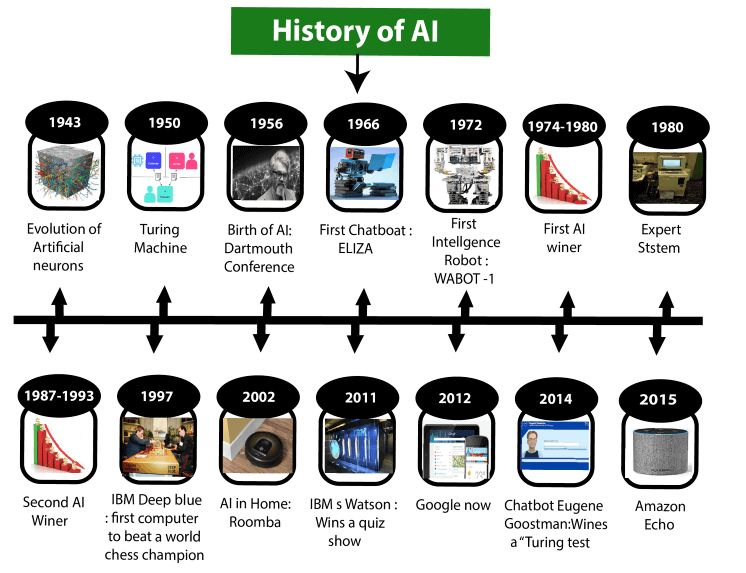

History of Artificial Intelligence
Intelligence is not a new word and not a new technology for researchers. This
technology is much older than you would imagine. Even there are the myths of Mechanical men in Ancient Greek
and Egyptian Myths. Following are some milestones in the history of AI which defines the journey from the AI
generation to till date development.
